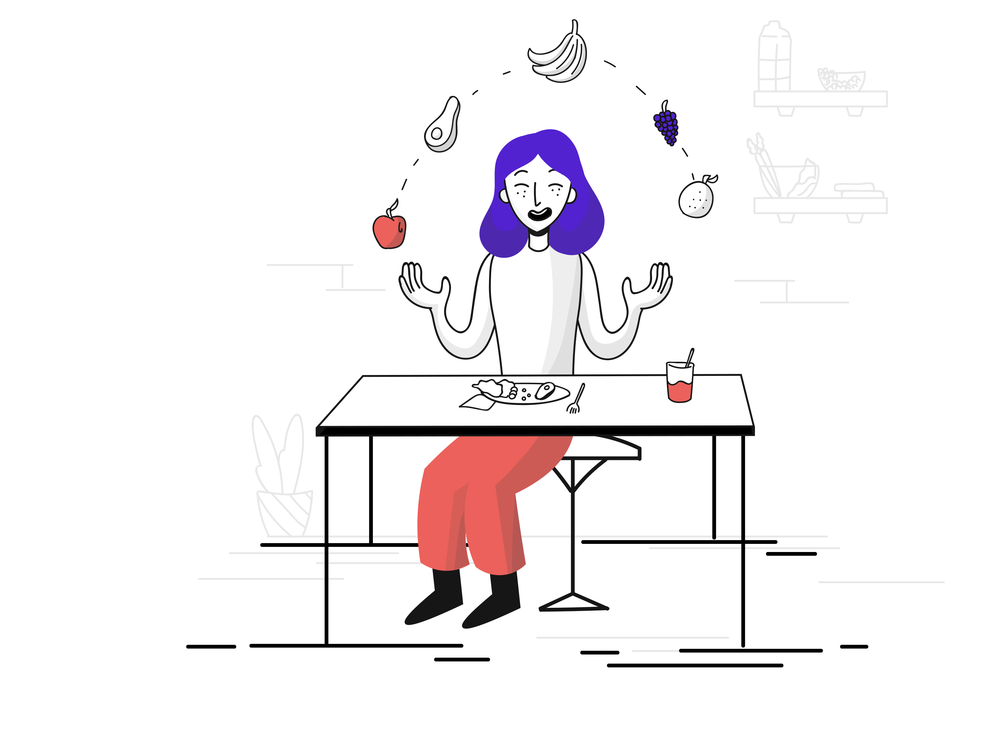

식사 중 과일 저글링, 놀라운 재주로 눈길 끄는 여자

식사 중에도 과일을 저글링하는 여자가 최근 한 레스토랑에서 화제다. 이
여자는 식사를 하면서도 균형 감각과 집중력을 잃지 않고, 사과와 오렌지, 포도
등 여러 종류의 과일을 공중에서 자유롭게 튕겨낸다. 주변 사람들은 그녀의
놀라운 재주에 감탄하며 박수를 보냈고, 그녀는 웃으며 "단순한 취미"라며
겸손하게 대답했다. 식사를 즐기면서도 끊임없이 연습하는 그녀의 모습에 많은
이들이 감동을 받았다.